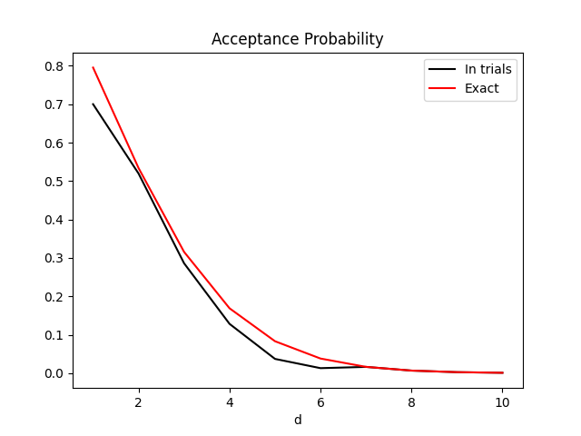

Examples
Example 1: Log-Normal
To sample from the log-normal distribution:
import numpy as np import scipy from rusampling import Ru logf = scipy.stats.lognorm.logpdf t = Ru(logf, s=1) samples = t.rvs(n=100000) t.plot()
Or, we can use \(X=\log(x)\) to transform to a normal distribution, sample from that, and transform back. This improves the acceptance probability, so samples faster.
We have to pass the inverse transform, \(x(X) = e^X\), and the log-Jacobian of this transform, which is \(X\).
I have set undo_transformations=False in rvs for illustrative purposes.
import numpy as np
import scipy
from rusampling import Ru
logf = scipy.stats.lognorm.logpdf
t = Ru(
logf, s=1,
X_to_x = lambda X: np.exp(X),
X_to_x_logj = lambda X: X
)
samples = t.rvs(n=100000, undo_transformations=False)
t.plot()
Example 2: Cauchy Distribution
The bounding box for the Cauchy distribution does not exist if r < 1. For values > 1, r=1.26 gives the optimal acceptance probability.
I used the plot_f method to check the bounding box is in the right place.
import scipy.stats as stats from rusampling import Ru t = Ru(stats.cauchy.logpdf, r=1.26) t.plot_f() # check that the rectangle is found correctly t.rvs(n=500000) t.plot(bins=80, xmax=10, xmin=-10) # plot a histogram of results

Example 3: Gamma Distribution Parameter Sampling
Generate samples from the gamma distribution, then sample the shape and scale. The prior is \(\frac{1}{a \sigma }\), chosen for reliability (see our paper on this topic).
Note that in order to sample quickly, the logpdf must be vectorised in whichever variable is to be sampled. SciPy does not provide logpdfs that are vectorised in the parameters, so this is done by hand.
import numpy as np
import scipy.stats
from rusampling import Ru
def gamma_logf(params, x): # Posterior distribution for gamma
m = np.maximum(params, np.finfo(np.float64).eps)
sh, sc = m[:,0], m[:,1] # shape, scale
x_scaled = x[:,None]/sc
g = scipy.special.gamma(sh) # Computing components of the gamma logpdf
x_sum = np.sum(x_scaled, axis=0)
log_x_sum = np.sum(np.log(x_scaled), axis=0)
log_pdf = -len(x)*np.log(g*sc) + (sh-1)*log_x_sum - x_sum
log_prior = - np.log(sh) - np.log(sc)
return log_pdf + log_prior
data = scipy.stats.gamma.rvs(a=0.5, scale=5, size=200) # Generate training data from the gamma distribution
t = Ru(gamma_logf, x=data, d=2)
t.plot_f( # Confirm that the bounding rectangle is correct with contour plots
levels = 20,
n_points = 100,
xlim=np.asarray(((-0.5, 0.5), (-1, 1), (-0.75, 0.75))),
ylim=np.asarray(((-0.5, 0.5), (-1, 1), (-0.5, 0.8))),
)
y = t.rvs(n=10000)
t.plot(s=1, color='orangered')
The output from plot_f, below, has crosses at the maxima and minima:
And the output from plot:
Example 4: Acceptance Probability drop-off
Wakefield, Gelfand, and Smith (1991) present a formula for acceptance probability in Efficient generation of random variates via the ratio-of-uniforms method. Application to the n-dimensional Gaussian gives the expression $$P_a = \frac{(\pi/2)^\frac d2}{(1+rd)(\frac{1+rd}{er})^\frac d2}$$ I plotted this expression against d, together with the actual acceptance rate over 100,000 trials, in order to visualise the insuitability of Ratio-of-Uniforms in high dimensions. View the code here. From checking the exact expresions for the bounding box, it seems the mismatch between the two lines comes from inaccuracies in numerically maximising f, which could be improved with a method other than Nelder-Mead.
